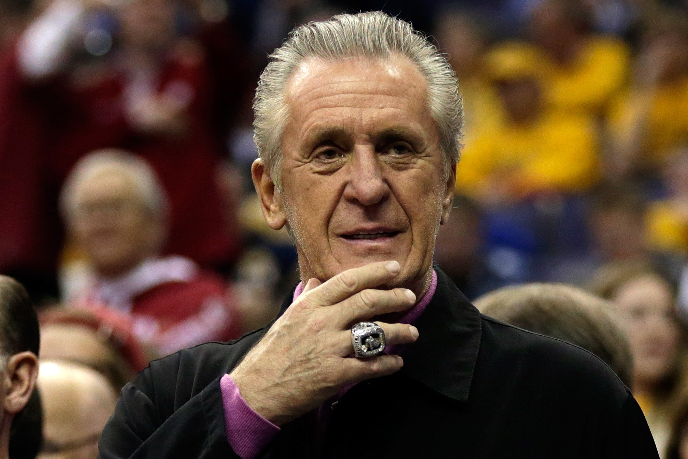

The Underappreciated Impact of Coaching on a Basketball Team
In the realm of basketball, where athleticism, strategy, and teamwork converge, the role of coaching stands as a linchpin in determining success on the court. The impact of coaching on winning extends far beyond designing plays or instructing athletes on techniques. Coaches are architects of a team's culture, motivators, strategists, and mentors. This essay aims to delve into the multifaceted and often underappreciated influence of coaching on the outcome of basketball games, exploring key aspects such as player development, tactical acumen, motivational skills, in-game decision-making, and player management.
Player Development: Nurturing Excellence
One of the foundational pillars of coaching's impact on winning lies in the realm of player development. Effective coaches are not merely tacticians; they are mentors committed to honing the skills and maximizing the potential of each player under their purview.
Individualized Training Regimens
Successful coaches recognize the unique strengths and weaknesses of each player. They design individualized training regimens that target specific areas for improvement, fostering a continuous journey of skill enhancement.
Skill Refinement
The constant quest for improvement defines great coaching. Whether it be refining shooting techniques, enhancing ball-handling skills, or improving defensive prowess, coaches play a pivotal role in ensuring that players evolve and refine their abilities.
Mental Toughness
Beyond physical skills, coaches contribute significantly to the mental fortitude of players. They instill resilience, focus, and a competitive mindset that becomes instrumental in navigating the challenges of high-stakes games.
Cultivating Team Chemistry
Player development extends beyond individual skills to the synergy of the entire team. Coaches foster an environment where players understand and complement each other's strengths, enhancing overall team cohesion.
Historical Examples
The influence of coaching on player development is evident in the transformative impact of Phil Jackson on Michael Jordan. Jackson's coaching philosophy emphasized not only the refinement of individual skills but also the importance of mental resilience, ultimately contributing to the Chicago Bulls' six NBA championships in the 1990s.
Pat Riley's tenure as the head coach of the 'Showtime' Los Angeles Lakers in the 1980s serves as another illustration of coaching impact on player development. Under Riley's guidance, players like Magic Johnson and Kareem Abdul-Jabbar not only improved their skills but also embraced a collective style of play that led to multiple championships.
Tactical Acumen: Mastering the Chessboard
Basketball is not merely a physical contest but a cerebral one where strategy and tactics play a pivotal role. Coaches are the architects of game plans, responsible for devising offensive and defensive schemes that exploit opponents' weaknesses while minimizing vulnerabilities.
Game Plans and Adjustments
A coach's ability to formulate effective game plans and make strategic adjustments during the course of a game is crucial. This includes recognizing opponent tendencies, exploiting matchups, and adapting to changing circumstances.
Offensive Innovation
Coaches shape the offensive identity of a team, determining the style of play, pace, and the distribution of scoring responsibilities. Innovations such as the Princeton offense, run-and-gun style, or the 'Triangle Offense' demonstrate the impact of coaching on offensive strategies.
Defensive Schemes
Defensive strategies are equally vital. Coaches design systems that suit the personnel at their disposal, emphasizing man-to-man or zone defenses, pressing, or trapping, based on the team's strengths and weaknesses.
Utilization of Analytics
Modern coaching integrates advanced analytics to gain insights into player performance, opponent tendencies, and optimal game strategies. Coaches who embrace statistical analysis can make informed decisions that influence game outcomes.
Historical Examples
Gregg Popovich, the longtime head coach of the San Antonio Spurs, is renowned for his tactical acumen. His ability to adapt offensive and defensive schemes based on the strengths of his roster has led to sustained success, including multiple NBA championships.
Red Auerbach, the legendary coach of the Boston Celtics, was a master strategist. Auerbach's emphasis on fast breaks, pressure defense, and innovative plays like the 'Havlicek Stole the Ball' in the 1965 Eastern Conference Finals showcased his impact on the tactical aspect of the game.
Motivational Skills: Fueling the Competitive Fire
Beyond strategic acumen, effective coaches possess the ability to motivate and inspire their players. Motivation is the engine that drives players to exceed their perceived limits and give their best effort on the court.
Inspiring a Winning Culture
Coaches set the tone for the team's culture. Those who instill a winning mindset, emphasizing accountability, discipline, and resilience, create an environment where players are driven to achieve success.
Building Confidence
Confidence is a catalyst for success in basketball. Coaches who foster a positive and supportive atmosphere contribute to the players' self-belief, enabling them to perform at their best in critical moments.
Adversity Management
Basketball is replete with ups and downs. Coaches who effectively manage adversity, instilling a belief in the team's ability to overcome challenges, contribute significantly to sustained success.
Recognition and Reinforcement
Acknowledging individual and team achievements, whether big or small, is a motivational tool in a coach's arsenal. Recognition reinforces positive behaviors and fosters a sense of collective accomplishment.
Historical Examples
The motivational prowess of coaches is evident in the impact of Pat Riley during the 'Showtime' era. Riley's charismatic leadership, motivational speeches, and emphasis on the team's collective success created a winning culture that propelled the Lakers to multiple championships.
Doc Rivers, known for his motivational skills, played a key role in the Boston Celtics' resurgence in the mid-2000s. Rivers' ability to inspire a group of star players to prioritize team success over individual accomplishments contributed to the Celtics' 2008 NBA championship.
In-Game Decision-Making: The Art of the Moment
Basketball is a dynamic sport where split-second decisions can alter the course of a game. Coaches are tasked with making crucial decisions in real-time, ranging from substitutions and timeouts to strategic adjustments that can impact the final outcome.
Strategic Timeouts
Timeouts are pivotal moments for coaches to assess the situation, make necessary adjustments, and provide critical guidance to players. The timing and content of a timeout speech can significantly influence a team's performance.
Substitutions
Coaches must make shrewd decisions regarding player substitutions, balancing player fatigue, foul trouble, and specific matchups. The right substitution at a critical juncture can swing momentum in favor of the team.
Play Calling
Coaches often design plays during timeouts or dead-ball situations. The ability to call effective plays that exploit defensive weaknesses or create open scoring opportunities is a testament to a coach's strategic acumen.
End-of-Game Strategies
In close contests, coaches must devise strategies for end-of-game scenarios. Whether it's designing a play for a last-second shot or managing the clock intelligently, end-game decision-making is a crucial aspect of coaching.
Historical Examples
The impact of in-game decision-making is exemplified by Phil Jackson's tenure with the Chicago Bulls and the Los Angeles Lakers. Jackson's ability to make strategic decisions during critical moments, such as the implementation of the 'Triangle Offense,' contributed significantly to his teams' success.
Pat Riley's strategic acumen was evident in the 'Miracle of Richfield' during the 1976 NBA Finals. Riley, then an assistant coach with the Lakers, suggested the implementation of a full-court press, leading to a comeback victory against the Boston Celtics in Game 5.
Player Management: Balancing Act
Effective coaching extends beyond Xs and Os; it involves managing personalities, egos, and team dynamics. The ability to strike a delicate balance, ensuring each player feels valued while fostering a collective sense of purpose, is paramount.
Understanding Player Personalities
Coaches must have an astute understanding of each player's personality, motivation triggers, and communication preferences. Tailoring coaching approaches to individual needs builds trust and rapport.
Fair Playing Time Allocation
Balancing playing time among team members, regardless of their role on the roster, is a complex task. Coaches who make fair and strategic decisions regarding playing time contribute to a harmonious team environment.
Conflict Resolution
Conflict is inevitable within a competitive environment. Coaches who adeptly manage conflicts, mediating disputes and fostering open communication, prevent discord from negatively impacting team performance.
Team Chemistry
Coaches play a crucial role in cultivating team chemistry. Through team-building activities, camaraderie-building exercises, and a shared vision, coaches foster an environment where players are motivated to perform not only for personal success but for the success of the team.
Historical Examples
The adept management of player personalities is evident in the success of Gregg Popovich with the San Antonio Spurs. Popovich's ability to connect with players on a personal level, understanding their motivations, has been integral to the Spurs' sustained success.
Phil Jackson's 'Zen Master' approach to coaching involved not only strategic acumen but also a deep understanding of player psychology. His ability to manage the diverse personalities of star players like Michael Jordan, Scottie Pippen, and Kobe Bryant contributed to multiple NBA championships.
Conclusion
In conclusion, the impact of coaching on winning in basketball is a nuanced and multifaceted phenomenon. Coaches, more than strategists, are architects of team culture, mentors, and motivational leaders. Their influence extends from the development of individual player skills to the orchestration of intricate game plans, the fostering of a winning culture, and the adept management of team dynamics.
The historical examples of coaching legends such as Phil Jackson, Pat Riley, Gregg Popovich, and others illustrate the profound impact a coach can have on a team's success. It is not solely about the number of championships won but the enduring legacy of instilling a winning mentality, fostering player development, and creating a cohesive team culture.
As the landscape of basketball continues to evolve, the role of coaching remains indispensable. In an era of advanced analytics, strategic innovations, and heightened player empowerment, effective coaching is a dynamic force that adapts to the ever-changing nature of the sport. The enduring truth is that behind every winning team is a coach who not only understands the game but also possesses the insight, leadership, and motivational prowess to guide their team to victory.